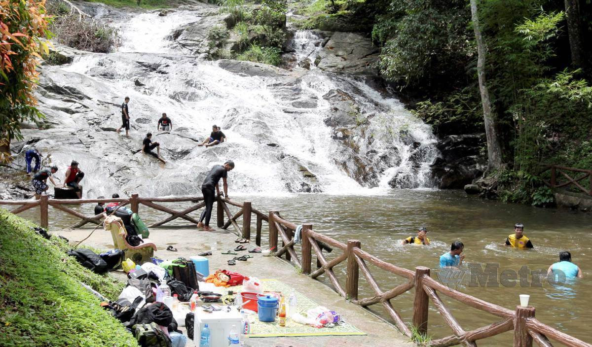

Eksplorasi Lata
Temui 6 khazanah air terjun tersembunyi yang menawarkan keindahan alam semula jadi yang memukau dan mendamaikan.

LATA BERANGIN
Air terjun tersembunyi dengan keindahan formasi batuan unik serta lubuk air biru yang jernih.
Terokai Lebih Lanjut →
LATA KEDING
Kawasan rekreasi popular yang dikelilingi rimbunan pokok tinggi, sangat ideal untuk perkelahan keluarga.
Terokai Lebih Lanjut →
LATA BAYU
Menawarkan aliran jeram yang panjang dan mendamaikan, popular sebagai zon perkhemahan utama.
Terokai Lebih Lanjut →
LATA SEDIM
Destinasi eko-pelancongan yang mendamaikan, kaya dengan kepelbagaian flora dan fauna eksotik.
Terokai Lebih Lanjut →
LATA KIJANG
Terkenal dengan struktur air terjun bertingkat-tingkat yang megah dan kolam mandi semula jadi yang luas.
Terokai Lebih Lanjut →
LATA PUTEH
Khazanah alam yang redup dan tenang, dikhaskan untuk pencinta aktiviti trekking dan survival.
Terokai Lebih Lanjut →